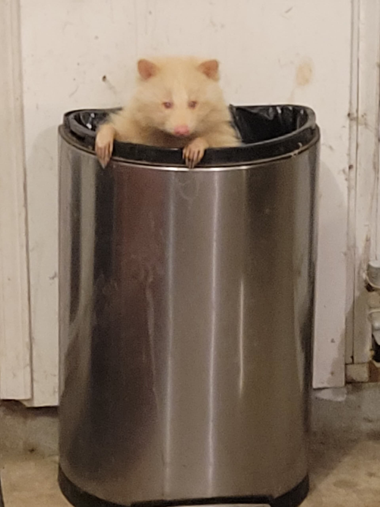
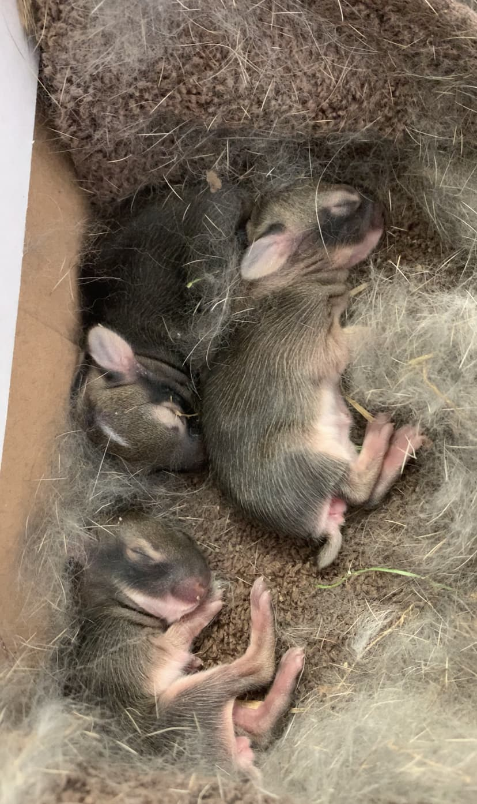

Humane Ways to Deter Wildlife
Wildlife can be discouraged from entering certain areas by gently disrupting their senses. These humane methods help animals move on without causing harm.
Taste Deterrents 👅
Some animals rely heavily on taste when deciding what to eat. Safe, non-toxic deterrents can make certain areas or foods less appealing.
- Sprinkle cayenne pepper or wildlife-safe pepper products around gardens or plants
- Mix cayenne pepper into bird seed to deter squirrels (birds are not affected by capsaicin)
- Apply taste deterrent sprays to plants to discourage grazing animals like rabbits or woodchucks
- Avoid intentional feeding
These methods are commonly used to deter animals such as squirrels, rabbits, and woodchucks.
👃 Smell Deterrents
Many animals have a strong sense of smell and avoid areas with unfamiliar or unpleasant scents.
- Use wildlife-safe scent repellents around entry points
- Apply predator scent products, such as coyote urine (used carefully and sparingly)
- Keep areas clean of food waste, compost, or strong attractants
- Secure trash bins and remove outdoor food sources
Smell deterrents can help discourage animals like raccoons, foxes, and skunks.

Raccoons are strongly attracted to food waste, making secure trash management and scent deterrents important.
✋ Touch & Physical Barriers
Changing how a surface feels or physically blocking access is one of the most effective deterrents.
- Install mesh or hardware cloth around gardens or under structures
- Use mesh underneath soil to protect plant bulbs from digging animals
- Seal entry points to homes, sheds, or crawl spaces
- Install chimney caps
- Use gravel or rough materials to discourage digging
For burrowing animals (like woodchucks), always ensure the animal is no longer inside and that there are no babies present before sealing off access points to their den.
🐇 Protecting Ground-Nesting Wildlife (e.g., Rabbits)
In suburban areas, ground-nesting animals such as rabbits may raise concerns for pet owners. When possible, the most humane approach is to temporarily limit disturbance in the area. For example, keeping dogs on a leash or supervised during the short nesting period (typically a few weeks) can prevent accidental disruption while allowing young animals to develop safely.
If a nest is located in a high-traffic yard, a physical barrier such as a lightweight, ventilated cover placed over the area may be used to reduce direct disturbance from pets, as long as it allows airflow and does not trap or block the adult animal’s access. Any barrier should always be checked carefully to ensure wildlife can still safely come and go.
In many cases, the best chance of survival for young wildlife is to remain in the care of their mother, who continues to return to the nest even if she is not always visible.
When nests are disturbed or animals are prematurely removed, it can reduce their chances of survival and place additional strain on wildlife rehabilitation centers, which prioritize cases that require urgent medical care or intervention.
When possible, avoiding disturbance and using the non-invasive deterrents mentioned above can help protect wildlife during sensitive nesting periods.

Example of baby rabbits admitted to rehabilitation after a ground nest was disturbed. In most cases, remaining with the mother provides the highest chance of survival.
👂 Sound Deterrents
Sudden or unfamiliar sounds can startle wildlife and make an area feel unsafe.
- Make noise (clapping, speaking loudly, play music or turn on the radio) to reinforce human presence
- Install motion-activated devices that emit sound when movement is detected
These are often effective for animals like coyotes, deer, and raccoons.
👀 Sight Deterrents
Visual disruptions can make an area feel unsafe or unpredictable to wildlife.
- Install motion-activated lights
- Use reflective materials to create visual disturbance
- Use window decals to prevent bird collisions
- Place predator decoys (like owl statues), moving them regularly
- Use motion-activated sprinklers to startle animals
- Supervise pets when possible, using your presence to reinforce distance
These deterrents can help discourage birds, deer, and small mammals.
🔄 Using Multiple Deterrents
In many cases, using a single deterrent may not be enough to change an animal’s behavior. Wildlife can become accustomed to one method over time, especially if a strong food source or shelter is involved.
Combining multiple deterrents—such as sound, light, and physical barriers—often produces more effective and longer-lasting results. For example, pairing a motion-activated light with a physical barrier or scent deterrent can make an area feel consistently unsafe and encourage animals to move on.
Different species—and even individual animals—may respond differently. If one approach does not work, adjusting or combining methods is often the key to success.
⚠️ Important Takeaways
- Always confirm no animals (especially babies) are present before blocking access
- Avoid using deterrents during active nesting periods (click here to learn why)
- Deterrents work best when combined and used consistently
- Behavior change takes time—patience is key
If deterrents are not effective or you're unsure what to do, contact a wildlife professional for guidance.